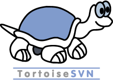
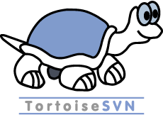
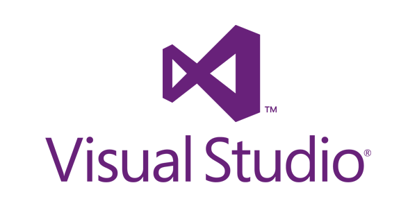
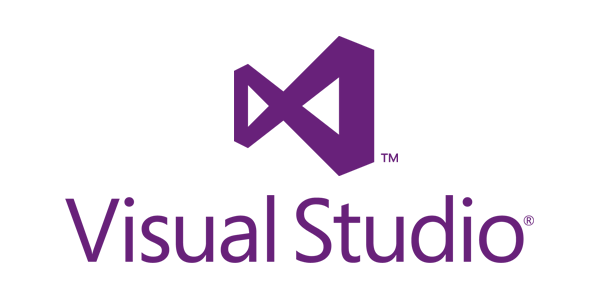

Stage 2ème Année de BTS SIO
GrizzlyDev
Objectifs : Permettre a l'élève de redecouvrir le monde professionelle.
Etablit à GrizzlyDev mes 2 principales missions sont : RDSAdmin une application informatique de gestion de session connecté à distance
et
MailSearch une application Web fonctionnant comme un moteur de recherche mais pour listé les mails de l'entreprise.
Acteur d'un projet de développement web
Lycée Ella Fitzgerald - Saint Romain en Gal
Objectifs : S'entrainer sur un sujet fictif mais réaliste répartit en 3 mission :
VideoRecrut une
plateforme web de recrutement afin de géré des utilisateurs,
AppEval une solution logiciels avec un base de donnés synchronisés
avec ODOO, un ERP, et enfin
Kontact une application mobiles qui elle sera en Web Services avec la base de données de AppEval.
BTS SIO 2ème Année
Option Solutions Logicielles et Applications MétiersObjectifs : Se former aux compétences de web design et de la POO via de nouveau langage tels que le Java, le PostegreSQL mais aussi de nouvelle technologies comme l'AJAX, le JSON, Javascript...
Stage 1ère Année de BTS SIO
Sailing Communication & Technologies
Besoins : Exprime le désir de posseder un site web, pour gagner de la clientèle
Objectifs : étendre sa notoriété et fidéliser ces clients
Image et Musique
Deuxième projet implicant une entreprise cette fois ci dans le Service de réparation
d'équipements audiovisuels (Vienne 38200)
Besoins : Exprime le désir de posseder un site web, pour gagner de la clientèle
Objectifs : étendre sa notoriété et fidéliser ces clients
BTS SIO 1ère Année
Option Solutions Logicielles et Applications MétiersLycée Ella Fitzgerald - Saint Romain en Gal
Reçu en 1ère année en BTS Services Informatiques aux Organisations, forme aux métiers techniques
de l'informatique dans les domaine Réseaux (SISR) et en Développement (SLAM)
Objectifs :
- Prendre connaissance des bases d'une infrastucture réseau Modèle
TCP/IP
- Établir une réflexion sur la continuité d'un projet informatique et
les solutions à apporter
- Apprendre de nouveaux langages de programmations tels que le C# et
les concepts de Programmation Orienté Objet
et de poursuivre pour integré l'option SLAM orienté développement
logiciel et application web
No Loading
Premier Projet implicant une Entreprise de distribution de jeux-vidéo No Loading (Vienne 38200),
en experimentant ma première approche du monde professionnel
Besoins : Visibilité et Communication sur ces produits, être informer des
goûts de sa clientèle, afin de s'adapter a la demande
Objectifs : Élargir sa Notoriété et faire la
Promotion de ces produits
BAC STMG
Option Systèmes Information de GestionLycée Ella Fitzgerald - Saint Romain en Gal
Mes débuts dans la gestion d'un projet en étudiant des schémas du parcours utilisateurs (diagramme UML), en construisant mes bases en Programmation web avec les langages : HTML pour le représentation; CSS pour le rendu graphique; PHP pour la relation Client/Serveur dynamique; SQL pour la gestion de base de données et mes premières requêtes CRUD; Javascript pour rendre rendre le site dynamique et ergonomique graphiquement


 



 
